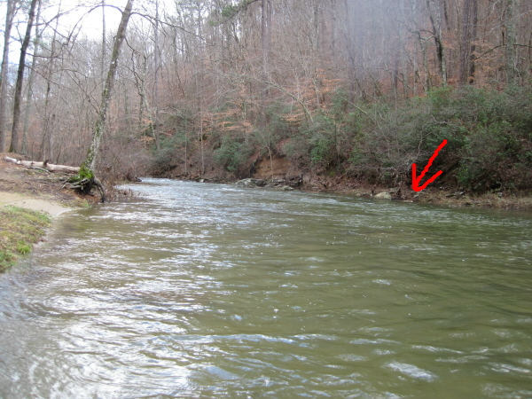
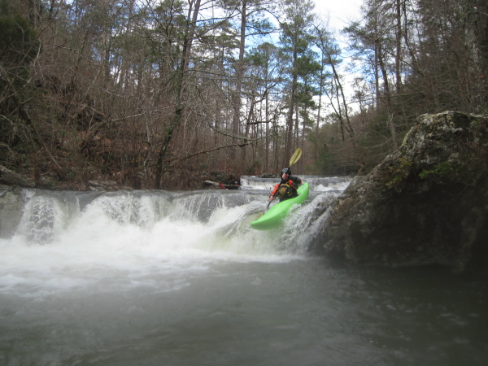
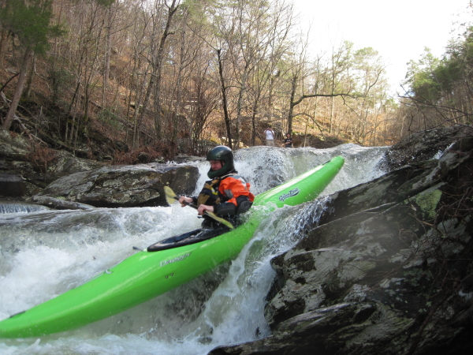
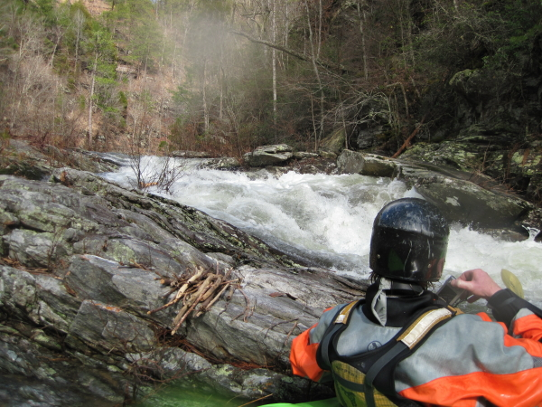
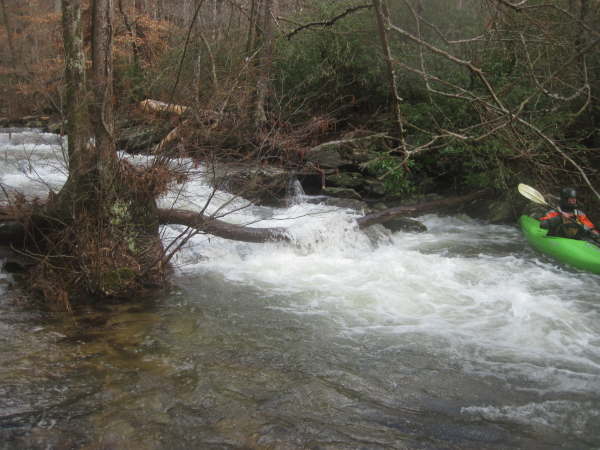
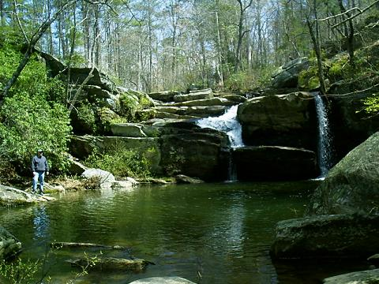
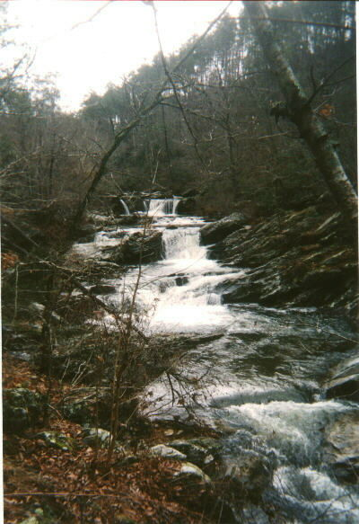

|  |
This is where the creek hits Lake Chinnabee. The tree on river
right is onbvious until it fall into the lake one of these days. Across the water from the tree, the second rock
on river left is just poking out of the water. This the low side of medium, or maybe an OK low level. If the rock
is covered it is a nice level. |
 |
Jason Cook on the second drop
(photo courtesy Wes Cook) |
 |
The next drop, a sloping ledge
(photo courtesy Wes Cook) |
|  |
Brian McAnnally from a different angle. |
 |
The right side line at Devil’s Den
(photo courtesy Wes Cook) |
 |
A 7 foot boof. This is followed quickly by another 4 foot
drop.
(photo courtesy Wes Cook) |
|  |
This is the second drop of the double drop |
|  |
The slide. The river left side is not great. |
|  |
As of March 2010, a nasty log hazard exists on the runout back
to the lake. |
|  |
Some scouting photos...
Last steps of Cheaha Falls at (obviously) low water. The total trop from
~50' upstream may be 25'. They may be runnable, but I'd bet on some unpleasant bedrock contact at any reasonable
water level.
(photo courtesy JD)
|
|  |
Devils Den (aka the Six Pack) on a low water scouting trip
(photo courtesy Shane Hulsey) |